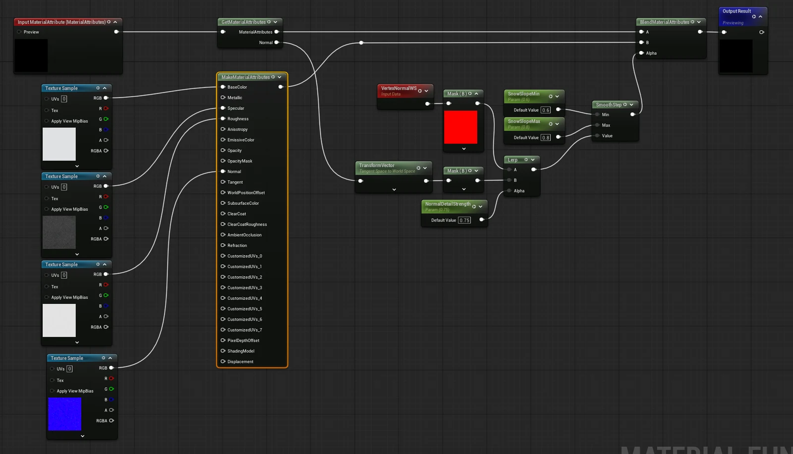
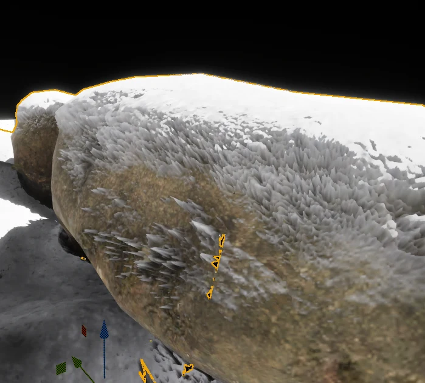
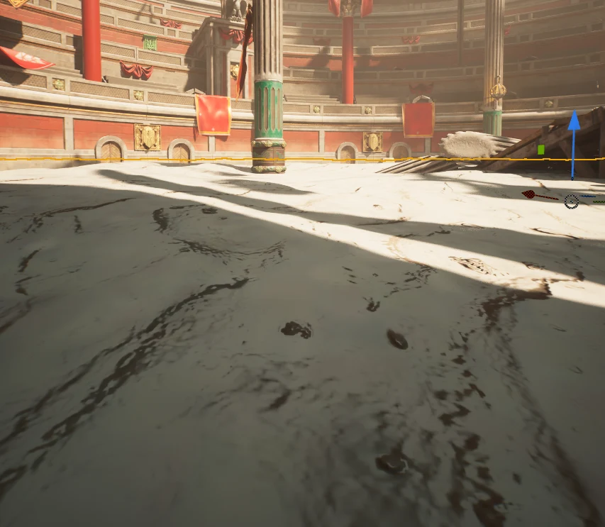

위를 향한 면에 눈을 얹는 셰이딩에서 시작해 실제 두께를 만드는 변위까지 이어가자 같은 눈 마스크만으로는 색과 지오메트리를 모두 다루기 어려웠다.
이 글은 2026년 8월 29일–9월 2일 작업 로그에서 눈 마스크와 변위 실험을 골라 정리한 기록이다. 당시의 구현과 실패를 다루며, 완성된 범용 눈 시스템을 뜻하지 않는다.
위를 향한 면에 눈을 얹기#
VertexNormalWS의 B 채널과 SmoothStep으로 위쪽 면을 구분하고, 노말맵의 세부 요철은 Tangent 공간에서 World 공간으로 변환해 마스크에 반영했다.
눈 재질은 MF_Snow Material Function으로 분리해 기존 Material Attributes와 혼합했고, 바탕 재질을 다시 만들지 않고 눈 표현을 연결했다.


처음에는 PixelNormalWS로 마스크를 만들어 Normal 입력에 연결했는데 이 값은 Normal 입력이 적용된 결과라 순환 참조가 생겼다. 그래서 VertexNormalWS를 기준으로 바꾸고 노말맵을 직접 읽어 공간을 변환하는 방식으로 수정했다.
색과 변위의 마스크 분리#
Nanite Displacement로 눈 두께를 만들자 경사면에 가시가 생겼다. 색에 쓰던 노말 디테일이 변위에도 들어가 작은 변화까지 표면의 높이 차이로 나타났기 때문이다.


변위용 마스크에는 VertexNormalWS만 사용하고 전환 구간도 넓혔다. 색에는 세밀한 변화가 필요했지만 형태를 움직이는 마스크는 부드럽게 바뀌어야 했다.
| 경로 | 사용한 기준 | 목적 |
|---|---|---|
| 색·재질 혼합 | 노말맵 디테일을 포함한 마스크 | 표면의 작은 요철 표현 |
| 변위 | VertexNormalWS 기준의 완만한 마스크 | 급격한 높이 변화 줄이기 |
WPO로 바꾸며 확인한 경계#
노말 방향으로 변위하자 하드 엣지에서 갈라진 정점이 서로 다른 방향으로 움직였다. 위쪽으로 움직이는 WPO도 시도했지만 마스크 값이 다르면 같은 위치의 정점도 서로 다른 거리만큼 이동했다.
그래서 지오메트리 눈은 연속된 바닥 표면에 적용하고 하드서피스 프랍에는 셰이딩 눈을 사용하도록 범위를 나눴다.


WPO = 변위 마스크 × (0, 0, 1) × SnowHeight × 큰 노이즈WPO는 기존 정점을 움직이기 때문에 정점이 적은 평판은 통째로 떠오를 뿐 눈더미를 만들지 못했다. 바닥을 조밀하게 만든 뒤에도 Nanite의 평면 단순화가 영향을 줘 눈 패치에서는 Nanite를 제외했다.
남은 작업#
눈 두께와 색 마스크를 연동하는 작업이 남아 있다. 이후에는 RVT·VHM 표면과 접촉 RT를 연결하는 눈 발자국 시스템으로 작업을 이어갔다.
이 글에는 해당 실험의 GPU 비용이나 성능 개선 수치를 제시하지 않는다. 캡처는 구현 과정의 결과이며, 조건을 통제한 성능 비교 자료는 아니다.